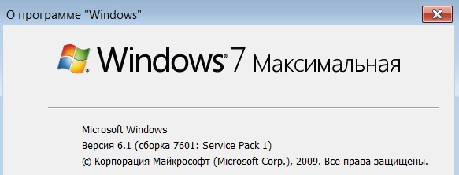

Microsoft Access DB for work small company for 5-10 people.
I created this base to work in a paint company in 2000 year.
The base functioned perfectly for more than 10 years.
I wanted to refactoring this DB in 2022 year.
And I ran into an issue.
The problem is the following: When I opened the form Redox, the database stopped working.
The base has fallen.
I have done very thorough testing of the database:
The database works fine in MS Office 32 bit.
The form Redox not working in MS Office 64 bit.
I have searched the Internet for my error, but have not been able to find an answer.
Since the form in the database is not essential to the job, then it may not used.
The database was tested on this system OS Win7 64 bit.
MS Access 2013 32 bit installed.
The database works great. The form Redox works fine.
MS Access 2016 32 bit installed.
The database works great. The form Redox works fine.
MS Access 2013 64 bit installed.
The database works good except form Redox. An error appears on the screen.
MS Access 2016 64 bit installed.
The database works good except form Redox. An error appears on the screen.
MS Access 2019 64 bit installed.
When the form Redox was opened, the database stopped working and the base has fallen.
The redox form is four queries from four tables in one form.
When changing the quantity or color selection, the values must change in all four queries.
The only thing that can be done is to bring all four tables into one and make a selection from one table.
Perhaps this is the solution to this problem.
When there is time, I will probably deal with this issue (change the database itself).
But since this database works fine without this form, and the change will take a long time,
I'll put this question aside for now.